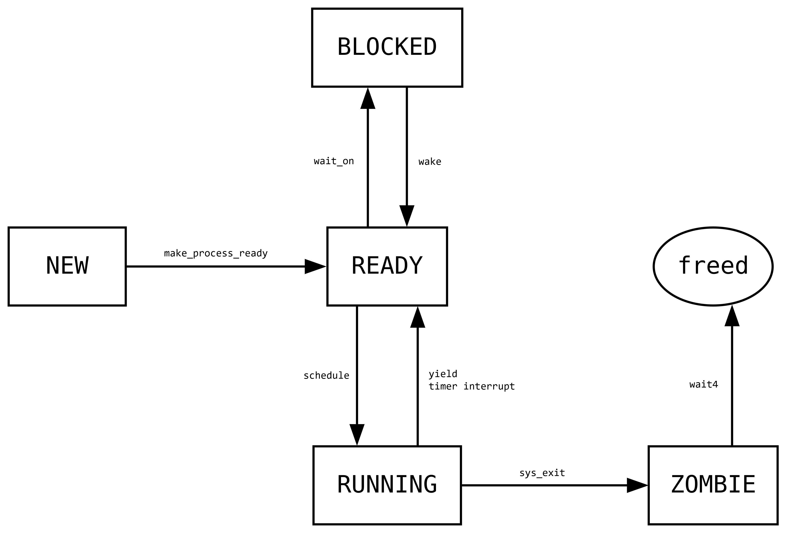

During the development of jank-pl, I thought it would be cool to use the language to create a project, just to have something to stress test the compiler and the generated code. After a bit of thinking (and watching videos about TempleOS) I decided that creating my own operating system would be the best choice. Writing an operating system involves writing performant low level code, such as with the scheduler, context switching, and syscalls, and it also required the capability for high level abstractions like with the filesystem. As a whole, it was the perfect project to determine if the language I had created was just a toy, or a fully fledged programming language.
jank-os is a 64-bit x86_64 kernel written in jank. The main goal was to have a system that could run on bare metal. Some features include:
waitq and maintaining coherence of shared kernel datastructures using mutex.
1,000,000x developer Steven Chen. Perhaps he'll add Wi-Fi support later.
Architecture-wise, the kernel draws heavily from Linux. Whenever there was a question as to how to do something, I pretty much always referenced the Linux manpages to see what sort of behaviour they had going on. I also mandated that all user programs that run on jank-os should also be able to be ran on Linux. However as I get further away from the interface between the kernel and userland, I started disregarding Linux and opted to experiment more.
In order for the kernel to run, it needs to be placed in memory, the CPU needs to be switched to long mode, paging needs to be set up, and so on. However when the user turns on the computer, memory is going to be uninitialized and the kernel binary is probably going to be located in some attached hard drive storage device, so how can we even write code to get all of this set up?
The Basic Input / Output System or BIOS, introduced in 1975 by IBM, solved this bootstrapping problem by first running some firmware to initialize the CPU in a useable state (16-bit real mode) and then it scans the attached hard drives until it finds a valid MBR with a boot partition.
It then loads the first sector of the selected drive into a fixed location in memory, 0x7C00, points
%rip there and starts execution.
Since only the MBR gets loaded into memory, your entire first level bootloader that's responsible for loading your
next level bootloader has to fit entirely within the fields allocated by the MBR that stores code, which is 446 bytes
for the legacy MBR and even less for modern versions.
Luckily, the BIOS firmware offers some boot utilities to read sectors from drives while in real mode, so you don't have
to fit an entire AHCI or USB controller into the MBR.
Note that since we're still in 16-bit real mode, we can only access the first $2^{16}$ bytes of memory, so that puts a
cap on the size of our stage 2 bootloader.
Finally, it's the second level bootloader that usually does all the setup required for the kernel to run. It then should load the kernel into memory, setup and map all the kernel datastructures into memory, and jump to it, relinquishing control.
Writing a legacy BIOS bootloader is tedious and boring. Apparently some other people thought so as well, and they created the Unified Extensible Firmware Interface or UEFI. UEFI is firmware that massively streamlines writing a bootloader by taking care of all the real-mode CPU setup. It allows you to skip straight to writing C code in 64-bit long mode, and even provides some filesystem utilities so that you can read files from an attached filesystem partition. It also internally maintains a memory map that you can send to your kernel for easy physical memory allocator setup.
Using UEFI involves writing a C program and compiling it to EFI bytecode, which is then interpreted by the UEFI firmware during boot. GNU provides an EFI toolchain for C, and you can get it on Linux using
sudo apt install gnu-efi
Actually writing the bootloader is very simple, it's pretty much just using C. Below is a simple program that should just use UEFI utilities to print some text to the screen.
To compile this program, you can use the following Makefile.
To actually create a bootable drive, you have to create a FAT32 partition and place the generated binary at path /EFI/BOOT/BOOTX64.EFI.
The FAT32 partition then needs to be marked as an EFI System Partition with hex code 0xEF00 with GPT or 0xEF with MBR.
When the computer boots up, UEFI will look for a EFI System Partition in the selected boot device,
and probe for an EFI executable at the aforementioned filepath.
When you're ready to exit UEFI boot services, you have to get the final memory map; UEFI won't let you exit unless you have a reference to the most recent memory map.
After you have exited UEFI boot services, you can do some cleanup like reclaiming memory that belonged to UEFI datastructures, swap over to the new pagetables you constructed, and jump over to the kernel.
After the bootloader has finished and the kernel starts to run, there is still a lot of setup work left to be done. Here are some important subsystems that still have to be setup.
The Global Descriptor Table is a datastructure that tells the CPU information about memory segments. Memory segmentation is a legacy form of memory virtualization where each segment corresponds to a contiguous physical memory region. A process could be handed a segment and they would have their own virtual memory space to work with, independent of other processes's segments. The GDT also stored permission related metadata to make sure that processes cannot modify segments they aren't allowed to. Now, paging has completely taken over segmentation for the purpose of memory virtualization. However since x86_64 seems to be unable to throw away legacy features, the GDT is still used for setting the current privilege level and therefore the CPU still requires a valid GDT.
The GDT lives in memory and, as the name suggests, it's just a table of segment descriptors.
The CPU keeps track of what segments are currently active using the segment selector registers
%cs, %ss, %ds, %es, %fs, %gs.
However, only %cs and %ds really matter for us, %cs is the code segment selector and
%ds is the data segment selector.
The value held by these segment selectors are constructed like (index << 3) | (TI << 2) | (RPL << 0).
index is simply an index into the GDT, TI indicates whether or not this selector is referring
to the GDT or LDT (Local Descriptor Table) and RPL is the Requested Privilege Level.
The RPL of a selector is checked once against the actual privilege level of the segment in the GDT when it's set.
The important part for modern x86_64 operating systems is that the privilege levels of the current code and data segments determine the current privilege level of the CPU. Therefore for memory accesses to work properly, we need 4 segments: kernel code segment, kernel data segment, user code segment, and user data segment.
However we can't place these segments wherever we want within the table, there are a few arcane rules that we must follow if we want
other parts of our OS to function, specifically the syscall and sysret instructions.
The first rule is that we usually want entry 0 to be a null entry so that we can assign the unused segment selectors to an invalid segment.
It also makes clear when we assign an important segment selector to be null, as we'll probably triple fault.
The next rules are related to how exactly syscalls can change the privilege level the CPU is running at.
When we execute syscall while in user mode, the CPU needs to know what segments correspond with kernel code and data
so that it can swap to kernel segments, therefore changing the current privilege level.
Similarly, when we do sysret while in kernel mode, we need to know where the user code and data segments are.
The CPU gets this information from the STAR MSR (SYSCALL Target Address Register), which is constructed as
The CPU expects that
SELECTOR_1 + 0x00 is kernel codeSELECTOR_1 + 0x08 is kernel dataSELECTOR_2 + 0x08 is user dataSELECTOR_2 + 0x10 is user code
So if we just set SELECTOR_1 = 0x08 and SELECTOR_2 = 0x10 then we can have the following GDT layout:
0x00 : NULL0x08 : kernel code0x10 : kernel data0x18 : user data0x20 : user codePutting this into code, I wrote the following helper to set a single GDT entry:
And then the GDT can be populated like so:
There's actually one more thing we have to set up regarding the GDT, and that is the Task State Segment or TSS. The TSS is usually by the CPU when it's handling interrupts to find a safe stack to switch to. It isn't stored directly in the GDT, but it's pointed to by a GDT System Descriptor, which notably takes up two slots.
struct GDTSystemDescriptor {
u16 limit0;
u16 base0;
u8 base1;
u8 access;
u8 flags;
u8 base2;
u32 base3;
u32 reserved;
}
struct TSS {
u32 reserved0;
u64 rsp0;
u64 rsp1;
u64 rsp2;
u64 reserved1;
u64 ist1;
u64 ist2;
u64 ist3;
u64 ist4;
u64 ist5;
u64 ist6;
u64 ist7;
u64 reserved2;
u16 reserved3;
u16 io_bitmap_offset;
}
void gdt_set_system_entry(i32 idx, u64 base, u32 limit, u8 access, u8 flags, GDTSegmentDescriptor* gdt) {
GDTSystemDescriptor* ent = $GDTSystemDescriptor* @gdt[idx];
ent->limit0 = $u16 (limit & $u32 0xffff);
ent->base0 = $u16 (base & 0xffff);
ent->base1 = $u8 ((base >> $u64 16) & 0xff);
ent->access = access;
ent->flags = $u8 ((limit >> $u32 16) & $u32 0x0f);
ent->flags |= flags;
ent->base2 = $u8 ((base >> $u64 24) & 0xff);
ent->base3 = $u32 ((base >> $u64 32) & 0xffffffff);
ent->reserved = $u32 0;
}
To actually flush our new GDT to the CPU, we can't just give it the address of the GDT, we need to make a GDT Pointer struct that points towards the GDT, and then hand the address of the pointer struct to the CPU. We need this extra step as we're not only giving the CPU the address of the GDT, we're also giving it the size. It's also prudent to then reset all of the segment selector registers before performing a long-jump to actually flush the changes.
After flushing the changes, you also have to notify the CPU as to which entry points to the TSS via ltr.
asm!("mov $0x28, %ax");
asm!("ltr %ax");
The Interrupt Descriptor Table is the next descriptor table you have to set up. As the name suggests, it holds all the information that is required for the CPU to be able to properly handle interrupts. Like the GDT, it lives in memory and is a table of interrupt descriptors.
struct IDTEntry {
u16 offset_1; // offset bits 0..15
u16 selector; // a code segment selector in GDT or LDT
u8 ist; // bits 0..2 holds Interrupt Stack Table offset, rest of bits zero.
u8 type_attr; // gate type, dpl, and p fields
u16 offset_2; // offset bits 16..31
u32 offset_3; // offset bits 32..63
u32 zero; // reserved
}
The offset fields hold the address of the handler for this interrupt, so when an interrupt is triggered, the CPU will jump
the instruction pointer to the offset provided by the corresponding IDT entry.
The selector field gives the new code segment selector the CPU should switch to when executing the handler,
and the type_attr field gives some important metadata about the interrupt, like if there is an interrupt entry here,
whether or not the interrupt is a trap, and what requested privileges it has.
Finally the ist field is just an index into the TSS, which was set up in the GDT section.
If ist is non-zero, then the CPU will switch to the corresponding stack in the TSS, one of TSS.ist1 to TSS.ist7,
before executing the interrupt handler.
Otherwise, the CPU will only switch stacks if we are going from user to kernel mode, and it will switch to TSS.rsp0.
To trigger an interrupt, you must provide an interrupt vector.
The CPU will then stop whatever it's doing at a some interruptible instruction boundary and use the provided interrupt vector to index into the IDT.
The IDT entry is then used to find the address of the handler for this interrupt, the code segment the CPU should switch to when executing the handler,
and if applicable, the new value for %rsp.
After switching to the new stack, the CPU will push some stuff, but how much and what exactly it pushes onto the stack
depends on the specific interrupt being triggered and from what privilege level it's being triggered from.
// all fields are 8-bytes
// SS : from user mode only
// %rsp : from user mode only
// RFLAGS
// CS
// %rip
// error code : only pushed on error interrupts
My interrupt handler stubs first make sure to push an error code if not already pushed, and then also push the interrupt vector before calling the general purpose interrupt handler.
//general protection fault
asm!("general_protection_fault_interrupt_entry_stub:");
asm!("pushq {INTNO_GENERAL_PROTECTION}");
asm!("jmp interrupt_handler_entry");
//page fault
asm!("page_fault_interrupt_entry_stub:");
asm!("pushq {INTNO_PAGE_FAULT}");
asm!("jmp interrupt_handler_entry");
//timer
asm!("timer_interrupt_entry_stub:");
asm!("pushq $0"); // doesn't push error code
asm!("pushq {INTNO_TIMER}");
asm!("jmp interrupt_handler_entry");
The general purpose interrupt handler has the tedious task of first determining whether or not we arrived from user mode,
and it checks this by seeing if the CS value has DPL = 3, in which case we came from user mode.
If we came from kernel mode, then it normalizes the stack to make it look like we came from user mode.
//cpu will have pushed these things onto the stack:
// SS : from user mode only
// %rsp : from user mode only
// RFLAGS
// CS
// %rip
// error code : if interrupt doesn't push this itself, this should be 0
// interrupt id : pushed by interrupt entry stub
asm!("interrupt_handler_entry:");
//check if we are coming from kernel mode
//we know that at least this is on the stack:
// RFLAGS
// CS
// %rip
// error code
// trap id
asm!("pushq %rax"); // save %rax
asm!("movq 32(%rsp), %rax"); // CS should be at +32 after pushing %rax
asm!("test $3, %al"); // mask out 0b11
asm!("jnz .interrupt_from_user");
//if we're coming from kernel mode, redo the things that are pushed
//so we can handle it as if we came from user mode
asm!("pushq $0x10"); // SS 216
asm!("lea 56(%rsp), %rax"); // there are 7 things pushed after the execution %rsp
asm!("pushq %rax"); // %rsp 208
asm!("pushq 56(%rsp)"); // RFLAGS 200
asm!("pushq 56(%rsp)"); // CS 192
asm!("pushq 56(%rsp)"); // %rip 184
asm!("pushq 56(%rsp)"); // error code 176
asm!("pushq 56(%rsp)"); // trap id 168
asm!("movq 56(%rsp), %rax"); // restore %rax
asm!("jmp .interrupt_trapframe_create");
//coming from user mode
asm!(".interrupt_from_user:");
asm!("popq %rax"); // restore %rax
asm!("swapgs"); // swap to kernel GS
Finally, it creates a trapframe to pass to the scheduler and calls the high level interrupt handler disambiguator.
//create trapframe
asm!(".interrupt_trapframe_create:");
asm!("sub $168, %rsp");
asm!("movq %rax, 0(%rsp)");
asm!("movq %rbx, 8(%rsp)");
asm!("movq %rcx, 16(%rsp)");
asm!("movq %rdx, 24(%rsp)");
asm!("movq %rsi, 32(%rsp)");
asm!("movq %rdi, 40(%rsp)");
asm!("movq %rbp, 48(%rsp)");
asm!("movq 208(%rsp), %rax");
asm!("movq %rax, 56(%rsp)");
asm!("movq %r8, 64(%rsp)");
asm!("movq %r9, 72(%rsp)");
asm!("movq %r10, 80(%rsp)");
asm!("movq %r11, 88(%rsp)");
asm!("movq %r12, 96(%rsp)");
asm!("movq %r13, 104(%rsp)");
asm!("movq %r14, 112(%rsp)");
asm!("movq %r15, 120(%rsp)");
asm!("movq 184(%rsp), %rax");
asm!("movq %rax, 128(%rsp)");
asm!("movq 200(%rsp), %rax");
asm!("movq %rax, 136(%rsp)");
asm!("mov %cr3, %rax");
asm!("movq %rax, 144(%rsp)");
asm!("movq 192(%rsp), %rax");
asm!("movq %rax, 152(%rsp)");
asm!("movq 216(%rsp), %rax");
asm!("movq %rax, 160(%rsp)");
//swap to kernel pagetable (need to do this after we save old pagetable)
asm!("movq %gs:0, %rax");
asm!("mov %rax, %cr3");
//gather arguments for high level interrupt handler
asm!("movq %rsp, %rax"); //%rax now holds trapframe base
asm!("movq 168(%rsp), %rbx"); //%rbx now holds trap_id
asm!("movq 176(%rsp), %rcx"); //%rcx now holds error_code
//go to higher level interrupt disambiguator
asm!("pushq %rax"); // trapframe* tf
asm!("pushq %rbx"); // u64 trap_id
asm!("pushq %rcx"); // u64 error_code
asm!("call interrupt_handler_disambiguator");
//disambiguator should not return
panic("interrupt_handler() : should not be here");
Interrupt vectors 0x00 to 0x1F are reserved for errors generated by the CPU, you can find what
vectors correspond to what errors here.
The rest of the interrupt vectors from 0x20 to 0xFF are freely programmable by either the
PIC or the APIC.
The 8529 Programmable Interrupt Controller is a legacy chip that manages hardware interrupts and routes them into the CPU to be handled. It has slots for up to 16 IRQs (Interrupt Requests) split between two chips, called the "Master" and the "Slave". The Master handles IRQ0 to IRQ7 and the Slave handles IRQ8 to IRQ15. Hardware devices are usually directly wired into one of the 16 IRQ ports provided by the PIC, and IRQs recieved by the PIC will get routed to the CPU according to the IRQ to interrupt vector mapping you configure.
We can talk to the PIC via outb. Here are the port numbers:
[__GLOBAL_FIRST__] u16 PIC_MASTER_COMMAND = $u16 0x0020;
[__GLOBAL_FIRST__] u16 PIC_MASTER_DATA = $u16 0x0021;
[__GLOBAL_FIRST__] u16 PIC_SLAVE_COMMAND = $u16 0x00a0;
[__GLOBAL_FIRST__] u16 PIC_SLAVE_DATA = $u16 0x00a1;
The first command you'll need to give the PIC is the initialize command (ICW1). This command makes the PIC wait for three extra "initialization words" on the data port. These bytes give the PIC
0x20,
then IRQ0 would correspond to interrupt vector 0x20, IRQ1 corresponds to 0x21,
and so on. It's a similar story for the Slave.
[__GLOBAL_FIRST__] u8 PIC_INIT_CODE = $u8 0x11;
[__GLOBAL_FIRST__] u8 ICW1_ICW4 = $u8 0x01; // Indicates that ICW4 will be present
[__GLOBAL_FIRST__] u8 ICW1_SINGLE = $u8 0x02; // Single (cascade) mode
[__GLOBAL_FIRST__] u8 ICW1_INTERVAL4 = $u8 0x04; // Call address interval 4 (8)
[__GLOBAL_FIRST__] u8 ICW1_LEVEL = $u8 0x08; // Level triggered (edge) mode
[__GLOBAL_FIRST__] u8 ICW1_INIT = $u8 0x10; // Initialization - required!
[__GLOBAL_FIRST__] u8 ICW4_8086 = $u8 0x01; // 8086/88 (MCS-80/85) mode
[__GLOBAL_FIRST__] u8 ICW4_AUTO = $u8 0x02; // Auto (normal) EOI
[__GLOBAL_FIRST__] u8 ICW4_BUF_SLAVE = $u8 0x08; // Buffered mode/slave
[__GLOBAL_FIRST__] u8 ICW4_BUF_MASTER = $u8 0x0C; // Buffered mode/master
[__GLOBAL_FIRST__] u8 ICW4_SFNM = $u8 0x10; // Special fully nested (not)
[__GLOBAL_FIRST__] u8 CASCADE_IRQ = $u8 2; // Slave cascade IRQ
// offset1 - vector offset for master PIC
// vectors on the master become offset1..offset1+7
// offset2 - same for slave PIC: offset2..offset2+7
[__GLOBAL_FIRST__] u8 ICW2_OFFSET_1 = $u8 0x20; // ICW2: Master PIC vector offset
[__GLOBAL_FIRST__] u8 ICW2_OFFSET_2 = $u8 0x28; // ICW2: Slave PIC vector offset
//ICW1
outb(PIC_MASTER_COMMAND, PIC_INIT_CODE);
outb(PIC_SLAVE_COMMAND, PIC_INIT_CODE);
//ICW2
outb(PIC_MASTER_DATA, ICW2_OFFSET_1);
outb(PIC_SLAVE_DATA, ICW2_OFFSET_2);
//ICW3
outb(PIC_MASTER_DATA, $u8 1 << CASCADE_IRQ); //tell master the IRQ the slave is wired to
outb(PIC_SLAVE_DATA, CASCADE_IRQ); //tell slave how it's wired into the master
//ICW4, have PICs use 8086 mode
outb(PIC_MASTER_DATA, ICW4_8086);
outb(PIC_SLAVE_DATA, ICW4_8086);
After sending all the initialization words, you'll want to mask out unused IRQs, which initially is all of them. This makes it so that only IRQs from devices that you explicitly set up are allowed to interrupt the CPU.
// set initial PIC masks, only cascade line allowed
// which IRQs are allowed to interrupt the CPU? (not set is allowed)
outb(PIC_MASTER_DATA, $u8 0b11111011);
outb(PIC_SLAVE_DATA, $u8 0b11111111);
Writing an interrupt handler for interrupts from the PIC is pretty much identical to handling CPU error interrupts. The only difference is that you must send a EOI (End Of Interrupt) to the PIC to let it know you're done handling the interrupt so that it can send you another one. If the interrupt originated from the Slave, then you must send an EOI to both the Slave and Master.
if(trap_id >= 0x28) {
//send EOI to slave
outb(PIC_SLAVE_COMMAND, $u8 0x20);
}
//send EOI to master
outb(PIC_MASTER_COMMAND, $u8 0x20);
Generally, most devices that use the PIC are physically hard-wired to a specific IRQ. For example, the PIT is always wired to IRQ0 and the PS2 controller is usually wired to IRQ1. If you want to support interrupts for PCI(e) devices, then you'll need to setup the APIC.
The Programmable Interval Timer is a hardware chip that allows you to generate interrupts at a specific interval. This is very useful if you want to implement a preemptive scheduler, as you can just schedule the next process whenever a timer interrupt fires.
Setting it up is very simple, you just tell channel 0 the frequency at which you want your interrupts to be generated, and it will start sending interrupts via IRQ0 of the PIC. Note that instead of directly telling it the frequency, the PIT has an innate frequency of 1.193182 MHz and you have to tell it how many oscillations to do before triggering one interrupt.
[__GLOBAL_FIRST__] u16 PIT_CHANNEL0 = $u16 0x0040;
[__GLOBAL_FIRST__] u16 PIT_COMMAND = $u16 0x0043;
//setup PIT
void init_pit() {
u64 divisor = $u64 (1193182 / 100); // 100 Hz
//channel 0, access mode: lobyte/hibyte, mode 3 (square wave)
outb(PIT_COMMAND, $u8 0b00110110);
outb(PIT_CHANNEL0, $u8 (divisor & 0xff)); //low byte
outb(PIT_CHANNEL0, $u8 ((divisor >> 0x8) & 0xff)); //high byte
}
As mentioned before, paging largely replaced segmentation as the primary form of memory virtualization, but what exactly is virtualization, and how exactly does paging achieve this?
Virtualization refers to the idea that a memory address is just a handle, and the system can make it refer to whatever it likes under the hood. The CPU uses virtualization to not only expose DRAM, but all sorts of hardware IO devices through Memory Mapped IO. Like the name suggests, talking to these IO devices just involves figuring out which region in memory they are mapped at, and then reads/writes in that region will get redirected to the corresponding IO device.
The OS uses virtualization to present each user program with the illusion of a contiguous address space. A process can act like it owns a clean chunk of memory starting at address 0, even though in reality its data may be scattered across physical memory, swapped out, or sharing pages with other processes.
Paging is how this control is implemented. Instead of translating individual bytes, the CPU translates memory in fixed-size blocks called pages. On x86_64, a normal page is 4096 bytes (4 KiB). Virtual memory is split into 4 KiB chunks, and physical memory is split into 4 KiB page frames, and the page tables define how virtual pages map to physical frames (or to MMIO regions). The lower 12 bits of an address are just the offset within a page; the mapping only decides which page frame you land in.
Paging on a x86_64 CPU actually works like this: First, the CPU recieves a 64-bit virtual address:
XXXX XXXX XXXX XXXX XXXX XXXX XXXX XXXX XXXX XXXX XXXX XXXX XXXX XXXX XXXX XXXX
60 56 52 48 44 40 36 32 28 24 20 16 12 8 4 0
It splits the address into 6 chunks (big endian):
XXXXXXXXXXXXXXXX XXXXXXXXX XXXXXXXXX XXXXXXXXX XXXXXXXXX XXXXXXXXXXXX
|------16------| |---9---| |---9---| |---9---| |---9---| |----12----|
Next, it ensures the address is "canonical", the most significant 16 bits must be a valid sign extension of the 47th bit (0-indexed).
For example, the address 0x0f00000000000000 is not canonical.
Then it uses the first 9-bit chunk to index into the top level pagetable, the address of which is stored in the %cr3 register.
Each pagetable takes up one page and consists of 512 ($512 = 2^9$) pagetable entries (PTEs).
Each PTE stores the physical address of the next pagetable, along with some metadata related to permissions.
We repeat this process until we've extracted the PTE corresponding to the last 9-bit chunk. This last PTE will have the physical address of the actual page we want to access. The 12-bit chunk can then be used to index into the page to find the exact physical address we want ($4096 = 2^{12}$).
There are some caveats to this process.
Finally, there are ways to control CPU caching behaviour through enabling bits in the corresponding PTEs. It used to be the case that you could only define cache related behaviour through the PWT (Write-Through) and PCD (Cache-Disable) bits. With the introduction of the PAT (Page Attribute Table) bit, PAT, PCD, PWT bits instead become interpreted as a 3-bit index into the IA32_PAT_MSR register, each entry describing some different caching behaviour. To maintain legacy behaviour, I setup the PAT MSR so that with PAT unset, the behaviour corresponds to non-PAT usage.
u64 pat = 0x0;
pat |= PAT_WB << $u64 0;
pat |= PAT_WT << $u64 8;
pat |= PAT_UCM << $u64 16;
pat |= PAT_UC << $u64 24;
pat |= PAT_WC << $u64 32;
pat |= PAT_WT << $u64 40;
pat |= PAT_UCM << $u64 48;
pat |= PAT_UC << $u64 56;
wrmsr(IA32_PAT_MSR, pat);
jank-os uses an upper-half kernel memory layout, which just means that all the kernel datastructures live in the upper
half of the virtual memory space, or above address 0x00007fffffffffff.
First, this makes it very easy to see when some weird memory behaviour is going on, as I can just compare the current privilege level to the address it's trying to dereference.
Second, every user process will have their own pagetables, giving them their own view into the lower half of the virtual address space. In addition to user memory, they also all need to have the kernel mapped. Of course, if a user program tries to access kernel memory directly, they'll page fault and be terminated, but we need the kernel mapped in user programs for stuff like syscalls and interrupts to work. Having the kernel in the upper half makes it so that user memory never overlaps with kernel memory.
Every user process additionally also has a dedicated "kernel stack". This is just a small memory region allocated in kernel memory and it's used whenever that process executes a syscall or an interrupt. This kernel stack is mapped in the same place in both user and kernel memory, so that when I switch to the kernel pagetables in a syscall, I don't have to also swap to a kernel-mapped stack. We need to allocate a separate kernel stack for every process as processes can yield or be interrupted while executing on the kernel stack, and we need to be able to save their execution context.
For its physical memory allocator, jank-os uses a free list. A free list is just a linked list where each node represents a page of free physical memory. When something needs to allocate a page, the allocator just removes the top node from the list and hands the memory address to the caller, and when something frees a page, the allocator simply creates a new node inside the freed page, and pushes it to the top of the list.
[__GLOBAL_FIRST__] phys_page_node* pma_head = $phys_page_node* $u64 -1;
[__GLOBAL_FIRST__] u64 PMA_PAGES_LEFT = 0x0;
//remove the top of the free list and return it
//if we're out of memory, panic
void* palloc() {
if($u64 pma_head == $u64 -1){
panic("palloc() : PMA out of memory");
}
PMA_PAGES_LEFT --;
void* ret = $void* pma_head;
pma_head = pma_head->prev;
return ret;
}
//just take the page and add it onto the top of the free list
//if the supplied address is not page aligned, panic
void pfree(void* page) {
if(($u64 page % PAGE_SIZE) != $u64 0) {
panic("pfree() : address not page aligned");
}
PMA_PAGES_LEFT ++;
phys_page_node* nhead = $phys_page_node* page;
nhead->prev = pma_head;
pma_head = nhead;
}
To initially populate the free list, I extract the final UEFI memory map from the bootloader.
The bootloader fills out a struct of important information, and one of these fields is a copy of the
final UEFI memory map.
I just go through the memory map and add all memory marked as EfiConventionalMemory to the free list.
i32 init_pma() {
MMapEnt* mmap = $MMapEnt* @(bootinfo->mmap);
u64 freepg_cntr = 0x0;
for(u64 i = 0x0; i < $u64 bootinfo->mmap_entries; i++) {
u64 base = mmap->base;
u64 size = mmap->size;
u64 type = $u64 mmap->type;
//EFI conventional memory
if(type == 0x7) {
u64 pgptr = (base + PAGE_SIZE - 0x1) & ~(PAGE_SIZE - 0x1);
while(pgptr + PAGE_SIZE <= base + size) {
freepg_cntr ++;
pfree($void* pgptr);
pgptr += PAGE_SIZE;
}
}
mmap = $MMapEnt* ($u64 mmap + $u64 sizeof(MMapEnt));
}
return 0;
}
Although allocating a single physical page is fast, if you need many pages or contiguous memory larger than a page, you'll be disappointed by this memory allocator. Probably in the future, I'll want to implement something better like a slab or buddy allocator.
A process is an isolated execution context. The OS gives it its own virtual address space and tracks its CPU state so that it can be paused and resumed preemptively.
A process's state is something that informs the OS about where the process is in its lifecycle. In jank-os, the states a process can occupy are
PROCESS_NEW : The process is still being created.PROCESS_READY : The process is eligible to be scheduled.PROCESS_RUNNING : The process is currently running on the CPU. There can be at most one process in this state at any moment.PROCESS_BLOCKED : The process is waiting on something.PROCESS_ZOMBIE : The process has exited and is waiting for cleanup by its parent.Naturally, if there are states, then there must be ways to transition between the states. Here is a little diagram with the important pathways a process can use to navigate through its states.

Note that a process is only freed when waited on by its parent. If a process is not freed when the parent exits, it gets reparented to the parent's parent.
Each process gets its own independent address space.
This is achieved by building separate pagetables for each process.
As mentioned before, each process's pagetables map the kernel and their kstack region.
The part that is isolated from other processes is the userspace which sits entirely below 0x00007fffffffffff.
First, we need to alloc a new process struct and fill out some important information:
process* proc = $process* malloc(sizeof(process));
new (proc) process();
proc->pt = pt_alloc_new();
proc->pid = pid_ptr ++;
proc->brk = USER_HEAP_BOTTOM;
proc->status = PROCESS_NEW;
memset($void* @(proc->fd_table), 0, sizeof(file*) * PROCESS_MAX_FD);
Next, we need to alloc a kstack for this process, and then map it as well as other important kernel datastructures to the user pagetable.
//alloc new kstack for process, need to map in kernel
assert(kstack_ptr + KSTACK_SIZE <= KSTACK_AREA_TOP, "create_process() : ran out of room for kstacks");
proc->kstack_bottom = kstack_ptr;
for(u64 i = PAGE_SIZE; i < KSTACK_SIZE; i += PAGE_SIZE) {
void* paddr = palloc();
pt_map_page(kernel_pt, $void* (kstack_ptr + i), paddr, PTE_WRITEABLE);
}
kstack_ptr += KSTACK_SIZE;
//map kernel
process_pt_map_kernel(proc, proc->pt);
Next, we create the user stack. In jank-os, the user stack is a fixed size and does not expand dynamically. I also map a guard page with no permissions to catch stack overflows.
//map user stack
for(u64 i = USER_STACK_BOTTOM; i < USER_STACK_TOP; i += PAGE_SIZE) {
pt_alloc_and_map_page(user_pt, $void* i, PTE_USER | PTE_WRITEABLE);
}
//map guard page
pt_alloc_and_map_page(user_pt, $void* USER_GUARD_PAGE, 0x0);
Next, we initialize the file descriptor table. Note that only the init process should get brand new standard IO file descriptors on creation, all other processes should initially inherit these from their parent.
if(flags & PROCESS_CREATE_FDTABLE) {
assert(proc->pid == $pid_t 0x1, "create_process() : should only create new fdtable for init process");
// vga TTY
vga_terminal* term = $vga_terminal* malloc(sizeof(vga_terminal));
new (term) vga_terminal();
tty* tty = tty_create_vga(term);
proc->fd_table[STDIN] = file_create_tty($u64 O_RDONLY, tty);
proc->fd_table[STDOUT] = file_create_tty($u64 O_WRONLY, tty);
proc->fd_table[STDERR] = file_create_tty($u64 O_WRONLY, tty);
}
To complete the initial setup, we need to write an initial execution context to the process's trapframe.
//write initial execution context to trapframe
trapframe* tf = $trapframe* (proc->kstack_bottom + KSTACK_TRAPFRAME);
memset($void* tf, 0, sizeof(trapframe));
tf->rsp = USER_STACK_TOP;
tf->rflags = 0x202; //enable timer interrupt
tf->pt = $u64 proc->pt;
tf->cs = 0x23; //user mode selectors
tf->ss = 0x1b;
So far we've done pretty much all of the OS side setup for the process to work. However, if we're trying to create a process from an executable, we must also load the code into the user space. The executable file format that jank-os recognizes is ELF (Executable and Linkable Format). It consists of one ELF header located at the beginning of the file that points to tables of other headers.
struct ELF64_Ehdr{
u8[16] e_ident; //starts with 0x7F 'E' 'L' 'F'
u16 e_type; //file type
u16 e_machine; //required architecture for this file
u32 e_version;
u64 e_entry; //virtual address of entry point
u64 e_phoff; //program header table file offset
u64 e_shoff; //section header table file offset
u32 e_flags; //processor specific flags, no flags have been defined as of now.
u16 e_ehsize; //ELF header size in bytes
u16 e_phentsize; //program header entry size, all entries are the same size
u16 e_phnum; //number of program header entries.
//If number of headers is >= 0xffff, the real number of entries in the
//program header table is held in the sh_info member of the
//initial entry in section header table. Otherwise, sh_info = 0.
u16 e_shentsize; //section header entry size, all entries are the same size
u16 e_shnum; //number of section header entries.
//If number of headers is >= 0xff00, e_shnum will hold 0 and the
//real number of entries will be held by sh_size member of the
//initial entry in the section header table. Otherwise, sh_size = 0
u16 e_shstrndx; //section header table index of the entry associated with the section name string table.
}
The only headers that we really care about are the program headers.
Each program header gives information as to how some contiguous segment of bytes in user space should be populated.
Specifically, you need to copy p_filesz bytes from offset p_offset of the file to
virtual address p_vaddr of the user pagetables.
Then, you need to assign the permissions according to p_flags, and if p_filesz is
less than p_memsz, you need to map the remaining space.
struct ELF64_Phdr {
u32 p_type;
u32 p_flags; //bit mask of flags, PF_X, PF_W, PF_R.
u64 p_offset; //offset from the beginning of the file at which the first byte of this segment resides
u64 p_vaddr; //virtual address at which the first byte of this segment resides
u64 p_paddr; //segment's physical address (should not be relevant for user programs)
u64 p_filesz; //number of bytes this segment occupies in the file
u64 p_memsz; //number of bytes this segment should occupy in memory when loaded
u64 p_align; //if p_align != 0, then p_offset % p_align == p_vaddr % p_align must be true
}
The program header table consists of e_phnum program header structs at offset e_phoff in the file.
Finally, you just need to set the initial %rip to equal e_entry.
We also need to set up the user stack with commandline arguments and environment information the program expects. The convention I chose to follow is the System V AMD64 ABI, and the stack should be initialized to something like this:
[environment strings...]
[argument strings...]
AT_NULL <- AT_NULL = {0, 0}
auxv[0] ... auxv[n-1] <- {u64 type, void* ptr}
NULL
envp[0] ... envp[n-1] <- pointers to environment strings
NULL
argv[0] ... argv[argc-1] <- pointers to argument strings
%rsp -> argc
Environment and argument strings should be null terminated.
By convention, environment strings are key value pairs separated by a = character.
Setting up the stack just involves alot of manual editing of userspace stack memory, and then setting %rsp
in the trapframe to point at argc.
The two ways a process can exit is through faulting (the interrupt handler kills the process) or through calling sys_exit.
When a process exits, the entire userspace is deallocated, the kernel gets unmapped, the open file descriptors get freed,
and any unreaped children are reparented to the parent's parent.
assert(proc->pid != $pid_t 1, "kill_process() : should not kill init proc");
//unmap kernel
process_pt_unmap_kernel(proc, proc->pt);
//free pagetable + underlying pages
pt_free(proc->pt);
proc->pt = $pagetable_t nullptr;
//free file descriptors
for(u64 i = 0x0; i < PROCESS_MAX_FD; i++){
if(proc->fd_table[i] == nullptr) continue;
file_close(proc->fd_table[i]);
proc->fd_table[i] = $file* nullptr;
}
//free cwd
assert($void* proc->cwd != nullptr, "kill_process() : alive process should always have CWD");
vfs_dec_refcnt(proc->cwd);
proc->cwd = $vfs_inode* nullptr;
//reparent children (for now just reparent to grandparent)
if(proc->parent != nullptr) {
process* grandparent = proc->parent;
for(u64 i = 0x0; i < proc->children.size(); i++) {
grandparent->children.push_back(proc->children[i]);
}
proc->children.clear();
}
The process is then transitioned to state PROCESS_ZOMBIE and waits for its parent to reap it by calling wait4,
which completely removes the process.
void remove_process(pid_t pid) {
//find process
process* proc = find_process(pid);
//make sure process is a zombie process
assert(proc->status == PROCESS_ZOMBIE, "remove_process() : process must be zombie");
//dealloc kstack
pagetable_t kernel_pt = pt_get_current();
for(u64 i = PAGE_SIZE; i < KSTACK_SIZE; i += PAGE_SIZE) {
void* vaddr = $void* (proc->kstack_bottom + i);
void* paddr = pt_translate(kernel_pt, vaddr);
pt_unmap_page(kernel_pt, vaddr);
pfree(paddr);
}
//remove from parent's child list
if($void* proc->parent != nullptr) {
u64 ind = proc->parent->children.size();
for(u64 i = 0x0; i < proc->parent->children.size(); i++) {
if(proc->parent->children[i]->pid == pid) {
assert(ind == proc->parent->children.size(), "remove_process() : parent should only contain child once");
ind = i;
}
}
assert(ind != proc->parent->children.size(), "remove_process() : should be able to find child in parent");
proc->parent->children.erase(ind);
}
//remove process from scheduler
erase_process(pid);
free($void* proc, sizeof(process));
}
Syscalls are the primary way for a user program to access kernel controlled resources, such as requesting more heap memory, interacting with the filesystem, or even getting the current time. Having all such requests go through the OS makes it so that the operating system can ensure that processes remain isolated and secure.
There is a little bit of setup required to get syscalls working. As mentioned before, you need to setup the STAR_MSR
that tells the CPU what segment selectors to switch to on syscall, but you also need to setup the LSTAR_MSR which
holds the syscall handler address, the FMASK_MSR which holds the bitmask that gets applied to %rflags
on syscall, and enable syscalls via the EFER_MSR.
//setup STAR
//syscall and sysret automatically loads new segment from descriptor table based off of these values
u64 SELECTOR_1 = 0x08; //kernel code
u64 SELECTOR_2 = 0x13; //kernel data
wrmsr(STAR_MSR, (SELECTOR_1 << $u64 32) | (SELECTOR_2 << $u64 48));
cout << "STAR : " << $void* ((SELECTOR_1 << $u64 32) | (SELECTOR_2 << $u64 48)) << "\n";
//setup LSTAR
wrmsr(LSTAR_MSR, $u64 @syscall_handler_entry);
//setup FMASK (clear interrupt flag on syscall entry)
wrmsr(FMASK_MSR, 0x200); // Clear IF (bit 9) on syscall
//enable syscalls
u64 efer = rdmsr(EFER_MSR);
efer |= 0x1;
wrmsr(EFER_MSR, efer);
Like the interrupt handlers mentioned previously, the syscall handler is simply what gets executed on the kernel side after
the syscall instruction finishes doing its work.
Also like the interrupt handler, we need to build a trapframe so that the user execution state can be restored after the
syscall is done executing.
I just switch to the process's kstack and build the trapframe directly on it.
asm!("syscall_handler_entry:");
asm!("swapgs");
//switch to process kstack
asm!("movq %rsp, %gs:8"); //save original %rsp
asm!("movq %gs:16, %rsp"); //%rsp now points to top of process kstack
//push sysret info
asm!("pushq %gs:8"); //user stack pointer
asm!("pushq %r11"); //user rflags
asm!("pushq %rcx"); //user RIP
//push trapframe (make sure trapframe is correct size)
asm!("sub $168, %rsp");
asm!("movq %rcx, 128(%rsp)"); //%rip
asm!("movq %rax, 0(%rsp)");
asm!("movq %rbx, 8(%rsp)");
asm!("movq %rcx, 16(%rsp)");
asm!("movq %rdx, 24(%rsp)");
asm!("movq %rsi, 32(%rsp)");
asm!("movq %rdi, 40(%rsp)");
asm!("movq %rbp, 48(%rsp)");
asm!("movq %gs:8, %rcx");
asm!("movq %rcx, 56(%rsp)");
asm!("movq %r8, 64(%rsp)");
asm!("movq %r9, 72(%rsp)");
asm!("movq %r10, 80(%rsp)");
asm!("movq %r11, 88(%rsp)");
asm!("movq %r12, 96(%rsp)");
asm!("movq %r13, 104(%rsp)");
asm!("movq %r14, 112(%rsp)");
asm!("movq %r15, 120(%rsp)");
//already set %rip
asm!("movq %r11, 136(%rsp)");
asm!("movq %cr3, %rcx");
asm!("movq %rcx, 144(%rsp)");
asm!("movq $0x23, 152(%rsp)"); //user mode selectors
asm!("movq $0x1B, 160(%rsp)");
//call higher level syscall handler
asm!("call syscall_handler");
Next, we need to actually handle the syscall.
The System V ABI expects the syscall number to be in %rax and the arguments in %rdi, %rsi,
%rdx, %r10, %r8, and %r9 in that order.
The high level syscall handler extracts the syscall number and arguments, and then calls the appropriate syscall handler.
For now, I just have a huge if-else chain, but it would probably be much better to just have an array of handler addresses
that I can just index into.
export u64 syscall_handler() {
u64 sys_id;
u64 arg1;
u64 arg2;
u64 arg3;
u64 arg4;
u64 arg5;
u64 arg6;
asm!("movq %rax, {sys_id}");
asm!("movq %rdi, {arg1}");
asm!("movq %rsi, {arg2}");
asm!("movq %rdx, {arg3}");
asm!("movq %r10, {arg4}");
asm!("movq %r8, {arg5}");
asm!("movq %r9, {arg6}");
u64 ans;
if(sys_id == SYS_READ) ans = $u64 sys_read($i32 arg1, $u8* arg2, arg3);
else if(sys_id == SYS_WRITE) ans = $u64 sys_write($i32 arg1, $u8* arg2, arg3);
// ... and so on ...
else {
pt_switch_to_kernel();
panic("syscall_handler() : unrecognized sys_id");
}
return $u64 ans;
}
The responsibility of actually performing the action requested by the syscall is deferred to these specific
high level handlers.
After the action is performed, it generates some output which is then passed back to the low level handler to be
passed back to the user.
The user expects the output to be passed back via %rax, so we can just skip loading %rax
from the trapframe since jank already puts return values of functions in %rax.
//call higher level syscall handler
asm!("call syscall_handler");
//pop trapframe
asm!("add $8, %rsp"); //skip %rax
asm!("popq %rbx");
asm!("popq %rcx");
asm!("popq %rdx");
asm!("popq %rsi");
asm!("popq %rdi");
asm!("popq %rbp");
asm!("add $8, %rsp"); //skip %rsp
asm!("popq %r8");
asm!("popq %r9");
asm!("popq %r10");
asm!("popq %r11");
asm!("popq %r12");
asm!("popq %r13");
asm!("popq %r14");
asm!("popq %r15");
asm!("add $8, %rsp"); //skip %rip
asm!("add $8, %rsp"); //skip RFLAGS
asm!("add $8, %rsp"); //assume we're currently using user_pt
asm!("add $8, %rsp"); //skip CS
asm!("add $8, %rsp"); //skip SS
Afterwards, we just need to pop the sysret we pushed onto the stack earlier and sysretq back to user mode.
//pop sysret info
asm!("popq %rcx"); //user RIP
asm!("popq %r11"); //user RFLAGS
asm!("popq %rsp"); //switch back to user stack
asm!("swapgs");
asm!("sysretq");
It's very common to pass data to and from the kernel through a buffer that lives in user memory.
For example, the write syscall takes in u8* buf as an argument, which is just a userspace virtual address.
Since we need the data in kernel memory, one of the first things we need to do (after validating the other arguments) is to copy over
the data into kernel memory.
We can do this by manually doing a pagetable walk to retrieve the physical address that the buffer is supposed to be stored at. We have to have safeguards in place when doing this, as the user can and will send bad addresses into syscalls. It's also important to make sure that the buffer sits entirely within memory the user is allowed to access, to prevent any security issues.
i32 copy_from_user(pagetable_t user_pt, u8* kbuf, u8* ubuf, u64 amt) {
u64 uptr = $u64 ubuf;
uptr = (uptr / PAGE_SIZE) * PAGE_SIZE; //round down to nearest page boundary
u64 ubuf_end = $u64 ubuf + amt;
u64 kptr = 0x0;
while(uptr < ubuf_end) {
//make sure page is mapped
if(!pt_is_vaddr_mapped(user_pt, $void* uptr)) {
return -ERR_FAULT;
}
//check flags
u64 flags;
void* paddr = pt_translate(user_pt, $void* uptr, flags);
if(!(flags & PTE_USER)) {
return -ERR_FAULT;
}
//copy data
for(u64 i = 0x0; i < PAGE_SIZE; i++) {
u64 cptr = uptr + i;
if(cptr < $u64 ubuf || cptr >= ubuf_end) continue;
kbuf[kptr ++] = ($u8* paddr)[i];
}
uptr += PAGE_SIZE;
}
return 0;
}
Copying data to the user through user-provided buffers is also common, and the process is very similar but in reverse.
Other systems mentioned so far control how processes enter kernel mode from user mode, such as interrupts or syscalls. The scheduler decides what process gets run next, saves the current process's state, and restores the next process's execution context so that it can return to where it left off.
A process's execution state is entirely contained in a trapframe struct.
struct trapframe {
u64 rax; // 0
u64 rbx; // 8
u64 rcx; // 16
u64 rdx; // 24
u64 rsi; // 32
u64 rdi; // 40
u64 rbp; // 48
u64 rsp; // 56
u64 r8; // 64
u64 r9; // 72
u64 r10; // 80
u64 r11; // 88
u64 r12; // 96
u64 r13; // 104
u64 r14; // 112
u64 r15; // 120
u64 rip; // 128
u64 rflags; // 136
u64 pt; // 144
u64 cs; // 152
u64 ss; // 160
}
Any interrupt or syscall entry path will build a trapframe saving the execution context that it interrupted. Generally, this trapframe is simply built on the kernel stack, and if needed, is saved in the per-process trapframe storage area.
jank-os uses a round-robin scheduler with no optimizations whatsoever. I just wanted a bulletproof scheduler for now so that I could focus on the other stuff relevant to getting jank-os to run on bare metal. Perhaps in the future I can do a whole project on improving the scheduler.
The actual implementation involves a circling around a queue until I find a process that's in the PROCESS_READY state.
Actually executing the next process mostly involves setting the new process to the PROCESS_RUNNING state,
configuring the re-entry paths to use the new process's kernel stack,
restoring its execution context, and finally doing a long jump to lock in %rip and segment registers.
Restoring the execution context is pretty tedious, but it mostly mirrors building the trapframe, just in reverse.
In order to not clobber registers as you are loading, I first push the entire trapframe onto the stack, then
pop the values into the registers.
Note that the iretq instruction gets its arguments from the stack, and the arguments that it gets
depend on the permission level of the segments that you are trying to transition to.
For example, if you are trying to return to user mode from kernel mode, then you would push this onto the stack:
asm!("pushq 160(%rax)"); // SS
asm!("pushq 56(%rax)"); // %rsp
asm!("pushq 136(%rax)"); // rflags
asm!("pushq 152(%rax)"); // CS
asm!("pushq 128(%rax)"); // %rip
But if you are just returning to kernel mode, you don't push SS and %rsp:
asm!("pushq 136(%rax)"); // rflags
asm!("pushq 152(%rax)"); // CS
asm!("pushq 128(%rax)"); // %rip
When waiting on a IO device operation, you'll want to allow other processes to execute and remove yourself from the pool of scheduleable processes until the IO device operation is complete. Or perhaps you have some shared resource that you only want to allow one process to modify at a time. Both of these problems can be solved with a simple synchronization primitive like a wait queue.
A process is blocked when its state is PROCESS_BLOCKED.
In this state, the scheduler will consider this process ineligible to be scheduled, and will skip it until it becomes PROCESS_READY.
In order for a process to become blocked, it must change its state to PROCESS_BLOCKED and then yield to the scheduler.
Changing the state is easy, to yield to the scheduler you can just invoke the timer interrupt manually.
void yield() {
asm!("int $0x20");
}
However, a process can't unblock (or wake) itself, as if a process is blocked it can't do anything. It needs something external to wake.
A wait queue consists of a queue of processes that are blocked. These processes are said to be "waiting on" the wait queue.
The scheduler provides some helpers to conveniently block the calling process, add it to the waitq,
and then yield to the scheduler.
With such a structure, we can let processes block after starting a long-running device IO operation,
and only be woken when their IO operation completes.
When a process starts a device IO operation, it can wait on the device drivers' dedicated waitq.
Then, we set up a interrupt such that it fires when the IO operation completes,
and the interrupt handler is the one to wake the corresponding processes.
A mutex is just a synchronization structure meant to let only one process at a time access some shared resource. We can implement mutexes with wait queues.
Note that in jank-os, I explicitly disable all hardware interrupts from firing when in kernel mode.
If I allow for hardware interrupts in kernel mode, then you would need to use atomic Compare and Swap
assembly instructions to actually take ownership of the lock, or you would need to explicitly disable interrupts
inside lock().
Another consideration is that you may have code paths that use mutex pre-scheduler.
I just model the pre-scheduler setup phase as having a single kernel thread,
so acquiring locks should always succeed immediately.
In the future, it would probably be better to setup the scheduler first, and then actually just have a kernel
worker thread do all the rest of the setup.
While the scheduler controls access to the CPU, the filesystem controls access to pretty much everything else. It acts as a portal for processes to access long term data storage, inter-process communication, networking, and so on.
A File Descriptor is a handle that a process can use to refer to a OS managed file resource.
It is an index into the process's file descriptor table, which itself is just an array of pointers to file structs.
A File is the actual resource that the OS manages.
struct file {
u64 type;
void* resource_ptr;
file_ops* ops;
u64 position;
u64 flags;
u64 refcount;
//statistics
u64 bytes_read;
u64 bytes_written;
u64 read_count;
u64 write_count;
}
A file needs to be able to represent many different types of resources, however we also need to be able to present a uniform
interface for user processes to interact with them.
For example, we should be able to use sys_write to write to both a pipe and a socket.
This is the perfect usecase for polymorphism, but as jank-pl does not have built-in polymorphism,
I implemented polymorphism using function pointers.
As you'd expect, each implementation of the underlying resource needs to implement all of these functions.
Then, the file interface can just call the appropriate function pointer in the attached file_ops struct.
i64 file_read(file* fd, u8* buf, u64 amt) {
i64 retval = fd->ops->op_read#(fd, buf, amt);
fd->read_count ++;
if(retval > $i64 0) fd->bytes_read += $u64 retval;
return $i64 retval;
}
i64 file_write(file* fd, u8* buf, u64 amt) {
i64 retval = fd->ops->op_write#(fd, buf, amt);
fd->write_count ++;
if(retval > $i64 0) fd->bytes_written += $u64 retval;
return $i64 retval;
}
A pipe is pretty much just a OS-managed FIFO bytestream that enables processes to communicate with each other. Bytes that are written to the write end of the pipe can be read by other processes that are holding the read end of the pipe.
The actual implementation of the underlying methods is as you'd expect, writes push bytes to the queue and reads pop bytes from the queue. It's worth noting that jank-os currently does not have a mechanism to limit the number of bytes waiting in queue, something I should probably patch up later. Also, pushing and popping bytes one at a time is very slow, there should probably be a dedicated queue structure for something like an OS pipe.
i64 pipe_read(file* fd, u8* buf, u64 amt) {
pipe_ref* pipe = $pipe_ref* fd->resource_ptr;
u64 buf_ptr = 0x0;
while(buf_ptr < amt && !pipe->eof()) {
u8 c;
i32 read_stat = pipe->poll_char(c);
if(read_stat != 0) return $i64 read_stat;
buf[buf_ptr ++] = c;
}
return $i64 buf_ptr;
}
i64 pipe_write(file* fd, u8* buf, u64 amt) {
pipe_ref* pipe = $pipe_ref* fd->resource_ptr;
u64 buf_ptr = 0x0;
while(buf_ptr < amt) {
i32 write_stat = pipe->write_char(buf[buf_ptr ++]);
if(write_stat != 0) return $i64 write_stat;
}
return $i64 buf_ptr;
}
A process can create a pipe by calling the dedicated sys_pipe syscall.
It creates the underlying pipe instance, as well as two file instances backed by pipe_ref structs,
one for the read and one for the write end of the pipe.
It then writes the corresponding file descriptors back to the user provided buffer.
Right now, pipe seems rather useless as both the read and write ends are owned by the same process.
One way we can use this pipe is redirecting a child process's output into the pipe.
First fork, then using the sys_dup2 syscall, replace the STDOUT file descriptor
with the write end of the pipe.
Then, use sys_exec to replace the child process with something else.
Note that file descriptors get preserved across sys_exec, which means that
when the child process starts running again, any writes to STDOUT will be directed at the pipe.
i32[2] pipe;
if(sys_pipe(@pipe)) {
cout << "sys_pipe failed\n";
sys_exit(1);
}
pid_t pid = sys_fork();
if(pid == $pid_t 0) {
//child
//replace stdout with write end of pipe
sys_dup2(pipe[1], STDOUT);
execvp(path.jstr(), argv);
cout << "exec failed\n";
sys_exit(1);
}
//parent
//wait for child
i32* wstatus = $i32* malloc(sizeof(i32));
while(waitpid(pid, wstatus, WNOHANG) == $pid_t 0) {
//continue
}
//read what the child wrote
string ret;
istream pin = new istream(pipe[0]);
u8 c = pin.next_char();
while(!pin.eof()) {
ret.push_back(c);
c = pin.next_char();
}
A TTY is a character device that manages the byte stream to and from a terminal or terminal emulator. Its name comes from the Teletypewriter, which was an electromechanical keyboard + printer combo that used to be commonly used to interact with computers. It mainly exists now to provide some nice features relevant to a terminal that you'd otherwise not get from a raw bytestream.
With all features disabled, a TTY acts pretty much identically to a pipe: bytes typed on the keyboard are immediately available for user programs to read, and bytes written to the TTY are immediately sent to the terminal to be rendered. However, the interesting part are the features. The features that are implemented in the jank-os TTY are:
\r to \n
for compatibility with weird keyboards.
\n to \r\n
for proper newline rendering.
User programs can modify these settings by providing a new termios struct via the sys_ioctl syscall.
The termios struct is pretty much just a collection of flags.
struct termios {
u32 c_iflag; // input flags
u32 c_oflag; // output flags
u32 c_cflag; // control flags
u32 c_lflag; // local flags
u8 c_line; // line discipline selector (ignore)
u8[32] c_cc; // control chars (VMIN, VTIME, etc.)
u32 c_ispeed; // input speed baud rate (ignore)
u32 c_ospeed; // output speed baud rate (ignore)
}
In jank-os, you can't create a TTY file resource like you can create a pipe. Instead, at startup the init process has its standard IO hooked up to a TTY, which is hooked up to a terminal emulator that has control over the screen framebuffer. This TTY is then propagated via forks and execs to all other processes so that they can communicate with the terminal.
if(flags & PROCESS_CREATE_FDTABLE) {
assert(proc->pid == $pid_t 0x1, "create_process() : should only create new fdtable for init process");
// vga TTY
vga_terminal* term = $vga_terminal* malloc(sizeof(vga_terminal));
new (term) vga_terminal();
tty* tty = tty_create_vga(term);
proc->fd_table[STDIN] = file_create_tty($u64 O_RDONLY, tty);
proc->fd_table[STDOUT] = file_create_tty($u64 O_WRONLY, tty);
proc->fd_table[STDERR] = file_create_tty($u64 O_WRONLY, tty);
}
A Virtual File System is an abstraction layer that allows for user programs to have a consistent interface when interacting with different flavors of filesystems. In jank-os, this manifests as an in-memory tree that can mount other filesystems onto itself. In order to make this work, I must assume some stuff about the filesystems I mount:
A file in the VFS can be referred to by a path, which is just a / separated list of node names on the walk
from the root of the VFS to the file.
In order to refer to a file inside of a mounted filesystem, you first walk to the mount root in the containing filesystem,
and then to the file within the filesystem.
For example, if you have a filesystem mounted at /home/stuff and you want to access file /real_stuff/bla.txt
within the mounted filesystem, you'd give the VFS the path /home/stuff/real_stuff/bla.txt.
Internally, jank-os represents each reachable file or directory as a vfs_inode.
A vfs_inode is a wrapper around a filesystem-specific inode plus a pointer to a table of operations,
vfs_ops, that implement lookup, directory iteration, and file I/O.
This makes it so that the VFS never needs to know the specifics of each mounted filesystem,
it just calls the provided methods.
Not every node in the VFS corresponds to on-disk data.
Virtual nodes, implemented by vfs_dentry, are purely in-memory and exist just to build the filesystem tree
so that it can hold mountpoints.
The VFS treats both virtual and real nodes uniformly through vfs_ops, but virtual
nodes intentionally implement only the subset of operations that make sense for an in-memory namespace.
In order to reliably walk to and from mounted filesystems, we must have a consistent way to treat the boundary between the nodes that are "hosting" the mounted filesystem, called mountpoints, and the mounted filesystem root.
Internally, a mount is modeled as a directed attachment between two existing trees: a directory node in the hosting tree (the mountpoint) and the root node of the mounted filesystem (the mounted root). Mounting does not merge the two trees, instead it just links them through metadata in the mountpoint and a pointer back to the parent in the mounted root.
Semantically, if a directory has some children before becoming a mountpoint, the old children should be hidden in favor of the children belonging to the mounted root. From the perspective of the user, the mountpoint should become the mount root. This can be achieved by treating a chain of mountpoints and mounted roots as a single node. When you traverse into a mountpoint chain, you traverse the entire thing, either up or down, until the node you're at isn't a mountpoint anymore.
The core operation that the VFS must support is vfs_walk(root, path) which resolves a /
separated path rooted at some root into a single vfs_inode*.
Resolution is done incrementally: for each path component, the walk performs a lookup on the current root and
moves to the resulting child.
In lookup(node, child), we first need to handle . and .. as special cases.
. is easy, we just do nothing and return the root.
.. is trickier because we need to take into account mount semantics.
Since we treat mountpoints as "hidden", we need to keep walking up until we hit a non-mountpoint, or the root of the entire VFS.
if(child == "..") {
//walk up until we hit a non-mountpoint, or we can't anymore.
//if we are currently at the root, this should just return the input node
vfs_inode* ptr = node;
if($void* ptr->parent != nullptr) ptr = ptr->parent;
while(ptr->is_mountpoint) {
if($void* ptr->parent == nullptr) {
free($void* res, sizeof(vfs_inode));
res = node;
return VFS_WALK_FOUND;
}
ptr = ptr->parent;
}
res = ptr;
return VFS_WALK_FOUND;
}
else if(child == ".") {
//do nothing
res = node;
return VFS_WALK_FOUND;
}
In all other cases, we can assume that child refers to an actual child of node.
So first, we must ensure that node is indeed a directory.
if(!node->is_directory()) {
return VFS_WALK_ERR;
}
Next, we see if this child is already in-memory by checking the vfs_inode child cache.
If the returned child is a mountpoint, then we must respect mount semantics and walk downwards until we hit a non-mountpoint.
while(1) {
vfs_inode* child_node = node->get_child(child);
if($void* child_node == nullptr) {
break;
}
//walk child until it's not mountpoint
while(child_node->is_mountpoint) {
assert($void* child_node->mount_root != nullptr, "vfs_lookup() : mountpoint should always have valid mount_root");
child_node = child_node->mount_root;
}
//free caller associated buffer
free($void* res, sizeof(vfs_inode));
res = child_node;
return VFS_WALK_FOUND;
}
Otherwise, we create a new instance of the child by using the filesystem specific lookup method.
i32 lookup_status = node->ops->lookup#(node, child, res);
if(lookup_status) {
//lookup failed
return lookup_status;
}
//register as child
node->add_child(child, res);
return VFS_WALK_FOUND;
With long term storage devices, memory is usually arranged into logical groups called blocks. Each block is a fixed size, usually 512 bytes, and you can only interact with the storage device in terms of block-sized chunks of memory. A Block Device is just the exposed interface allowing other parts of the kernel to read and write blocks to their respective underlying storage devices.
Most storage devices are subdivided into partitions, contiguous ranges of blocks which are described by a partition table. Partitions are represented as non-root block devices with a parent block device, and an offset into the parent. Reads and writes into a partition are simply reads and writes on the parent, just with a block offset.
i32 blockdev_read(blockdev* dev, u64 lba_start, u64 count, void* buf) {
while(!(dev->is_root)) {
lba_start += dev->lba_start;
dev = dev->parent;
}
assert(dev->lba_start == 0x0, "blockdev_read() : lba_start should be 0 for root block devices");
return dev->ops->read#(dev, lba_start, count, buf);
}
With the block device interface in place, the only remaining job is to provide blockdev_ops implementations for
actual hardware.
In jank-os, disks can be exposed by multiple backends (such as SATA via AHCI or removable storage via USB),
but they are all exposed as the same blockdev abstraction.
The Advanced Host Controller Interface (AHCI) backend handles SATA disks.
AHCI standardizes how the OS communicates with a SATA controller through a memory-mapped Host Bus Adapter (HBA)
and a set of ports, each potentially exposing a connected drive.
During initialization, the driver enumerates ports, detects attached devices, and registers each disk as
a root blockdev.
This is the extent of my knowledge on what our AHCI drivers are doing, as Steven pretty much implemented all of it.
Block device operations are expensive, so reads and writes first go through a block cache. The cache coalesces small sequential reads to significantly reduce their overhead, and coalesces writes by allowing users to modify blocks in-memory and only flushing them back to the block device when the cache entry is evicted.
The cache itself is just a large buffer of blockdev_cache_ent structs.
Each entry describes an in-memory block and can be uniquely identified by an pair<blockdev*, u64>.
To choose stale entries to remove, I use the CLOCK eviction algorithm.
Whenever I need to allocate a new entry, I iterate BLOCKDEV_CACHE_CLOCK_PTR until it sees an entry with
refcount == 0.
Then, if clock == 0, I evict the entry, otherwise I set clock = 0 and skip the entry for now.
When an entry is accessed, clock is set back to 1, which effectively gives recently accessed entries a second
chance to remain inside the cache.
When a user wants to read or write, they'll call blockdev_bget with a
pointer to the block device and LBA of the block they want to access.
If we get a cache hit, then a pointer to the in-memory block is returned to the user.
Otherwise we need to read some blocks into the cache in order to fulfill the user's request.
This is where coalescing small reads happens. On cache misses, I read the next $2^{16}$ bytes worth of blocks into the cache. I assume that disk data tends to exhibit locality, which means that all relevant information tends to clump up together within memory. So I do a big read up front to read everything the user may want to have into the cache, in order to save on the overhead of many small reads.
u64 amt_bytes = 0x1 << $u64 16; //65536
assert(dev->block_size <= amt_bytes, "blockdev_get_ent() : those are some big blocks D:");
u64 amt_blocks = amt_bytes / dev->block_size;
assert(amt_blocks * dev->block_size == amt_bytes, "blockdev_get_ent() : these should line up");
assert(amt_blocks > 0x0, "blockdev_get_ent() : requested block amt should be > 0");
//allocate cache entries
//need to do this before device read as this also flushes dirty cache blocks
u64* ent_inds = $u64* malloc(sizeof(u64) * amt_blocks);
blockdev_alloc_ents(amt_blocks, ent_inds);
//read from device
void* buf = malloc(amt_bytes);
i32 read_status = blockdev_read(dev, lba, amt_blocks, buf);
if(read_status) panic("blockdev_get_ent() : read failed D:");
//register blocks in cache
for(u64 i = 0x0; i < amt_blocks; i++) {
u64 ent_ind = ent_inds[i];
blockdev_cache_ent* ent = @(BLOCKDEV_CACHE[ent_ind]);
assert(ent->state == BLOCKDEV_CACHE_ENT_STATE_ALLOCD, "blockdev_get_ent() : wrong ent state");
//see if cache already has this block
key.second = lba + i;
if(BLOCKDEV_CACHE_MAP->contains(key)) {
assert(i != 0x0, "blockdev_get_ent() : cache should not already have first block");
//make ent available
ent->state = BLOCKDEV_CACHE_ENT_STATE_AVAILABLE;
}
else {
//populate ent
ent->state = BLOCKDEV_CACHE_ENT_STATE_OCCUPIED;
ent->clock = 1;
ent->refcount = 0x0;
ent->dirty = 0;
ent->dev = dev;
ent->lba = lba + i;
ent->buf = malloc(dev->block_size);
memcpy(ent->buf, $void* ($u64 buf + i * dev->block_size), dev->block_size);
//add map entry
assert(!BLOCKDEV_CACHE_MAP->contains(key), "blockdev_get_ent() : map should not contain this ent yet");
BLOCKDEV_CACHE_MAP->insert(key, ent_ind);
}
}
out_ent = @(BLOCKDEV_CACHE[ent_inds[0]]);
free($void* ent_inds, sizeof(u64) * amt_blocks);
free(buf, amt_bytes);
If a user wants to write, they can simply write to the block contained within memory, they just have to remember to call
blockdev_bdirty so the cache controller knows the cache buffer has been modified and needs to be flushed at some point.
This way, the user can make many small changes to a block, and the block will only get flushed to the underlying device
whenever the cache controller decides to flush the changes back, such as if the underlying device is about to be disconnected,
or the cache entry is being evicted.
Finally, when the user is done accessing a block, they can call blockdev_bput which just drops their
reference to the in-memory block, and makes the block available for eviction.
Currently, I only have drivers written for one flavor of on-disk filesystem: ext2. The main reason for implementing drivers for ext2 specifically was that they're much easier to implement than the alternatives.
Mounting ext2 starts by reading the superblock.
By convention it lives at a fixed $1024$ byte offset from the start of the partition.
The superblock tells us how the filesystem is laid out, such as the ext2 block size and the number of blocks
per block group, and it lets us sanity-check that this is actually ext2 via the magic value, 0xEF53.
A block in ext2 is a filesystem-level unit (commonly 1 KiB), and it does not have to match the underlying block device sector size. Because the superblock is at an absolute $1024$ byte offset, it may begin in the middle of an ext2 block when the filesystem block size is larger than 1 KiB.
struct ext2_super_block {
// Base Superblock Fields
u32 inodes_count; // Total number of inodes in file system
u32 blocks_count; // Total number of blocks in file system
u32 reserved_blocks_count; // Number of blocks reserved for superuser (see offset 80)
u32 free_blocks_count; // Total number of unallocated blocks
u32 free_inodes_count; // Total number of unallocated inodes
u32 first_data_block; // Block number of the block containing the superblock (also the starting block number, NOT always zero.)
u32 log_block_size; // log2 (block size) - 10. (In other words, the number to shift 1,024 to the left by to obtain the block size)
u32 log_frag_size; // log2 (fragment size) - 10. (In other words, the number to shift 1,024 to the left by to obtain the fragment size)
u32 blocks_per_group; // Number of blocks in each block group
u32 frags_per_group; // Number of fragments in each block group
u32 inodes_per_group; // Number of inodes in each block group
u32 mtime; // Last mount time (in POSIX time)
u32 wtime; // Last written time (in POSIX time)
u16 mnt_count; // Number of times the volume has been mounted since its last consistency check (fsck)
u16 max_mnt_count; // Number of mounts allowed before a consistency check (fsck) must be done
u16 magic; // Ext2 signature (0xef53), used to help confirm the presence of Ext2 on a volume
u16 state; // File system state
u16 errors; // What to do when an error is detected
u16 minor_rev_level; // Minor portion of version (combine with Major portion below to construct full version field)
u32 last_checked; // POSIX time of last consistency check (fsck)
u32 check_interval; // Interval (in POSIX time) between forced consistency checks (fsck)
u32 creator_os; // Operating system ID from which the filesystem on this volume was created
u32 major_rev_level; // Major portion of version (combine with Minor portion above to construct full version field)
u16 res_uid; // User ID that can use reserved blocks
u16 res_gid; // Group ID that can use reserved blocks
// Extended Superblock Fields
u32 first_inode; // First non-reserved inode in file system. (In versions < 1.0, this is fixed as 11)
u16 inode_size; // Size of each inode structure in bytes. (In versions < 1.0, this is fixed as 128)
u16 block_group; // Block group that this superblock is part of (if backup copy)
u32 feature_optional; // Optional features present (features that are not required to read or write, but usually result in a performance increase)
u32 feature_required; // Required features present (features that are required to be supported to read or write)
u32 feature_unsupported; // Features that if not supported, the volume must be mounted read-only
u8[16] fs_id; // File system ID (what is output by blkid)
u8[16] volume_name; // Volume name (C-style string: characters terminated by a 0 byte)
u8[64] last_mounted; // Path volume was last mounted to (C-style string: characters terminated by a 0 byte)
u32 compression_algos; // Compression algorithms used (see Required features above)
u8 prealloc_file; // Number of blocks to preallocate for files
u8 prealloc_dir; // Number of blocks to preallocate for files
u8[2] unused; // (Unused)
u8[16] journal_id; // Journal ID (same style as the File system ID above)
u32 journal_inode; // Journal inode
u32 journal_device; // Journal device
u32 orphan_inode_head; // Head of orphan inode list
u8[788] padding; // (Unused)
}
With the block size known, we can interpret the rest of the on-disk layout.
ext2 divides the disk into contiguous block groups, each containing a fixed number of blocks, sb->blocks_per_group, and an inode table sized for
sb->inodes_per_group inodes.
Block groups start at sb->first_data_block and extend to the end of the partition.
Importantly, block numbers stored in ext2 metadata are absolute with respect to the start of the filesystem
(the partition), not relative to sb->first_data_block.
The next structure we read is the Group Descriptor Table (GDT), which sits immediately after the superblock.
The GDT is an array of per block group descriptors.
Each entry points to the block bitmap, inode bitmap, and inode table for that block group.
Since the superblock and GDT occupy real blocks on disk, they are reflected in the block group's allocation metadata:
the corresponding bits are set in that group's block_bitmap.
struct ext2_group_descriptor {
u32 block_bitmap; // Block address of block usage bitmap
u32 inode_bitmap; // Block address of inode usage bitmap
u32 inode_table; // Starting block address of inode table
u16 free_blocks_count; // Number of unallocated blocks in group
u16 free_inodes_count; // Number of unallocated inodes in group
u16 used_dirs_count; // Number of directories in group
u8[14] padding; // (Unused)
}
In ext2, every file and directory is represented by an inode. An inode is the filesystem's record for an object: it stores the object's metadata, such as its type, permissions, owner, size, timestamps, link count, and the disk blocks that hold its contents. Importantly, an inode does not store the file's name. Names live in directory entries, which map a filename to an inode number. Note that multiple directory entries can point to the same inode.
Inodes are 1-indexed with inode 1 being reserved, and the root directory is always inode 2.
struct ext2_inode {
u16 mode; // Type and permissions
u16 uid; // User ID
u32 size; // Lower 32 bits of file size in bytes
u32 atime; // Last access time
u32 ctime; // Inode change time
u32 mtime; // Last modification time
u32 dtime; // Deletion time
u16 gid; // Group ID
u16 links_count; // Number of directory entries pointing to this inode
u32 sectors; // Number of 512-byte sectors used by this inode
u32 flags; // Inode flags
u32 ossv1; // OS-specific value
u32[12] direct_block_ptr; // Direct pointers to data blocks
u32 singly_ind_block_ptr; // Pointer to a block of block pointers
u32 doubly_ind_block_ptr; // Pointer to a block of singly indirect block pointers
u32 triply_ind_block_ptr; // Pointer to a block of doubly indirect block pointers
u32 generation; // Generation number
u32 file_acl; // Extended attribute / ACL block
u32 dir_acl; // Upper 32 bits of size for regular files in newer revisions
u32 fragment_block_addr; // Fragment block address
u8[12] ossv2; // OS-specific value
}
To locate an inode, first determine which block group contains it.
Every block group contains sb->inodes_per_group inodes.
Then use that group's descriptor to find the starting block of the inode table.
From there, compute the inode's offset within that table.
This is similar to locating a data block, except that inodes are 1-indexed.
The inode's block pointer fields describe where the file's data lives. For small files, the direct pointers usually point straight to data blocks. For larger files, ext2 uses indirect blocks: blocks whose contents are themselves lists of block numbers. This lets a single inode describe files much larger than what could fit with only direct pointers.
For directories, the data blocks contain directory entries, each of which maps a filename to an inode number.
struct ext2_dir_entry {
u32 inode; // Inode
u16 size; // Total size of this entry (Including all subfields)
u8 name_len; // Name Length least-significant 8 bits
u8 file_type; // Type indicator
u8[24] name; // Name characters
}